Use Case Diagrams Reference
| Notation | Description |
|---|---|
| Subject | |
|
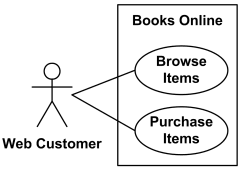
Books Online (subject) with applicable use cases and Web Customer actor. |
The subject (of use cases) is the system under design or consideration to which a set of use cases apply. The subject could be a physical system, software program, or smaller element that may have behavior, e.g. subsystem, component, or even class. Subject is presented by a rectangle with subject name in upper corner with applicable use cases inside the rectangle and actors - outside of the system boundaries. |
|
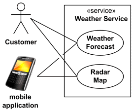
Weather Service subject stereotyped as «service». |
Standard UML stereotypes and keywords for the subject are:
|
| Applicability of Use Cases | |
|
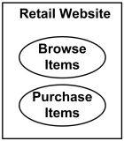
Use cases Browse Items and Buy Items are applicable to Retail Website subject. |
Use cases visually located inside the system boundaries are the use cases applicable to the subject (but not necessarily owned by the subject). |
| Ownership of Use Cases | |
|
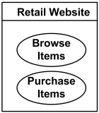
Retail Website subject owns use cases. |
The nesting (ownership) of a use case by a classifier is represented using the standard notation
for nested classifiers.
|
| Actor | |
|
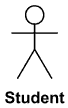
Student actor. |
Standard UML icon for actor is "stick man" icon with the name of the actor above or below the icon. Actor names should follow the capitalization and punctuation guidelines for classes. The names of abstract actors should be shown in italics. All actors must have names. |
|
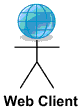
Custom icon for Web Client actor. |
Custom icons that convey the kind of actor may also be used to denote an actor, such as using a separate icon(s) for non-human actors. |
|
Custom icon for Bank actor. |
|
|
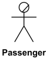
Business actor Passenger. |
A business actor (introduced in Rational Unified Process to support Business Modeling) represents a role played by some person or system external to the modeled business. Business actor is not part of UML standard. Business actor is shown as "stick man" icon with a line crossing its head. |
|
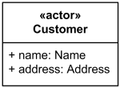
Customer actor as Class. |
An actor may also be shown as a class rectangle with the keyword «actor», having usual notation for class compartments, if needed. |
| Generalization between actors | |
|
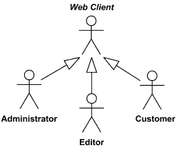
Web Client actor is abstract superclass for Administrator, Editor and Customer. |
Generalization between actors is rendered as a solid directed line with a large arrowhead (the same as for generalization between classes). |
| Use Case | |
|
User Registration Use Case. |
Every use case must have a name. Use case is shown as an ellipse containing the name of the use case.
|
|
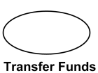
Transfer Funds Use Case. |
A use case could be shown as an ellipse with the name of the use case placed below the ellipse. |
|
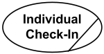
Business use case Individual Check-In. |
Business use case was introduced in Rational Unified Process to support Business Modeling - to represent business function, process, or activity performed in the modeled business. Business use case is represented in RUP with use case oval icon and a line crossing it down right. |
|
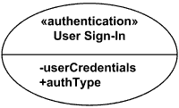
Use Case User Sign-In stereotyped as «authentication» |
An optional stereotype keyword may be placed above the name and a list of properties -
operations and attributes - included below the name in a compartment.
|
|
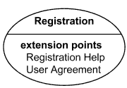
Registration Use Case with extension points Registration Help and User Agreement. |
Use case with extension points may be listed in a compartment of the use case with
the heading extension points.
|
|
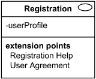
Registration Use Case shown using the standard rectangle notation for classifiers. |
A use case can also be shown using the standard rectangle notation for classifiers with an ellipse icon in the upper righthand corner of the rectangle and with optional separate list compartments for its features. |
|
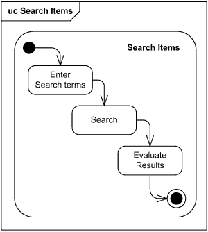
Use case Search Items rendered as frame with |
Use case could be rendered in the frame labeled as use case or in abbreviated form as uc. The content area of the frame could contain different kinds of UML diagrams. For example, use case could be described with activity diagram or state machine. |
| Generalization between use cases | |
|
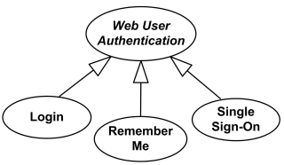
Web User Authentication use case is abstract use case specialized by Login, Remember Me and Single Sign-On use cases. |
Generalization between use cases is similar to generalization between classes – child use case inherits properties and behavior of the parent use case and may override the behavior of the parent. It is rendered as a solid directed line with a large arrowhead, the same as for generalization between classifiers. |
| Extend | |
|
Registration use case is complete and meaningful on its own. It could be extended with optional Get Help On Registration use case. |
Extend is a directed relationship that specifies how and when the behavior defined in usually supplementary (optional) extending use case can be inserted into the behavior defined in the extended use case. Extended use case is meaningful on its own, it is independent of the extending use case. Extending use case typically defines optional behavior that is not necessarily meaningful by itself. Extend relationship between use cases is shown by a dashed arrow with an open arrowhead from the extending use case to the extended (base) use case. The arrow is labeled with the keyword «extend». |
|
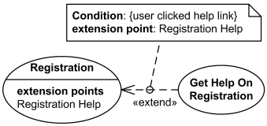
Registration use case is conditionally extended by Get Help On Registration use case in extension point Registration Help. |
The condition of the extend relationship as well as the references to the extension points are optionally shown in a comment note attached to the corresponding extend relationship. |
| Extension Point | |
|
Registration Use Case with extension points Registration Help and User Agreement. |
An extension point is a feature of a use case which identifies (references) a point in the behavior of the use case where that behavior can be extended by some other (extending) use case, as specified by extend relationship. Extension points may be shown in a compartment of the use case oval symbol under the heading extension points. Each extension point must have a name, unique within a use case. Extension points are shown as a text string according to the syntax: extension point ::= name [: explanation ] |
|
Extension points of the Registration use case shown using the rectangle notation. |
Extension points may be shown in a compartment of the use case rectangle with ellipse icon under the heading extension points. |
| Include | |
|
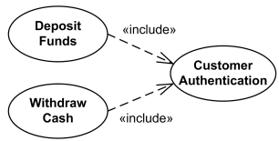
Deposit Funds and Withdraw Cash use cases include Customer Authentication use case. |
An include relationship is a directed relationship between two use cases when required, not optional behavior of the included use case is inserted into the behavior of the including (base) use case. The include relationship is analogous to a subroutine call or macro and could be used:
An include relationship between use cases is shown by a dashed arrow with an open arrowhead from the base use case to the included use case. The arrow is labeled with the keyword «include». |
|
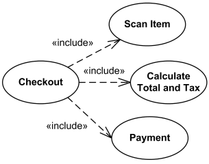
Checkout use case includes several use cases - Scan Item, |
Large and complex use case could be simplified by splitting it into several use cases each describing some logical unit of behavior. Note, that including use case becomes incomplete by itself and requires included use cases to be complete. |
| Association | |
|
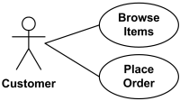
Actor Customer associated with two use cases. |
An association between an actor and a use case indicates that the actor and the use case
communicate with each other.
An actor could be associated to one or several use cases. |
|
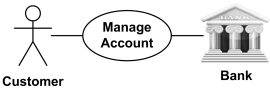
Use case Manage Account associated with Customer and Bank actors. |
Use case may have one or several associated actors.
It may not be obvious from use case diagram which actor initiates the use case, i.e. is "primary actor". (In non-standard UML, primary actors are those using system services, and supporting actors are actors providing services to the system.) |
|
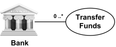
Actor Bank is involved in multiple Use cases Transfer Funds. |
When an actor has an association to a use case with a multiplicity that is greater than one
at the use case end, it means that a given actor can be involved in multiple use cases
of that type. The specific nature of this multiple involvement is not defined in the UML 2.2.
Use case multiplicity could mean that an actor initiates multiple use cases:
|
|
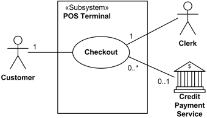
Checkout use case requires Customer actor, hence the 1 multiplicity of Customer. The use case may not need Credit Payment Service (for example, if payment is in cash), thus the 0..1 multiplicity. |
Required actor may be explicitly denoted using multiplicity 1 or greater. UML 2.5 also allows actor to be optional. Multiplicity 0..1 of actor means that the actor is not required by any of the associated use cases. |

Two or more Player actors are involved in Play Game use case. Each Player participates in one Play Game. |
When a use case has
an association
to an actor with a multiplicity that is greater than one at the
actor end, it means that more than one actor instance is involved
in initiating the use case.
The manner in which multiple actors participate in the use case
is not defined in the UML 2.x up to the latest UML 2.5.
For instance, actor's multiplicity could mean that:
|